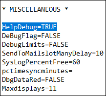
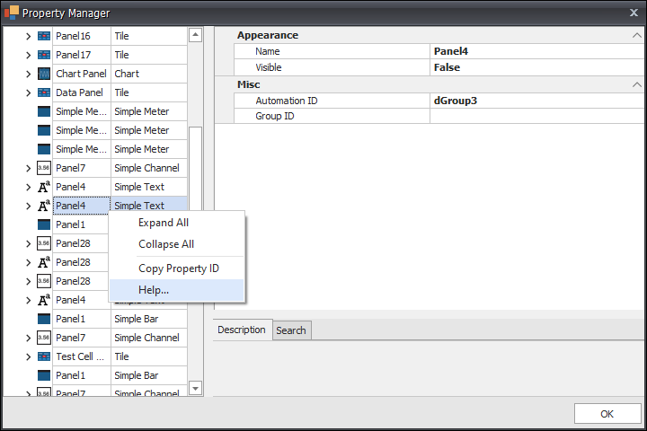
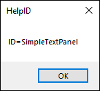
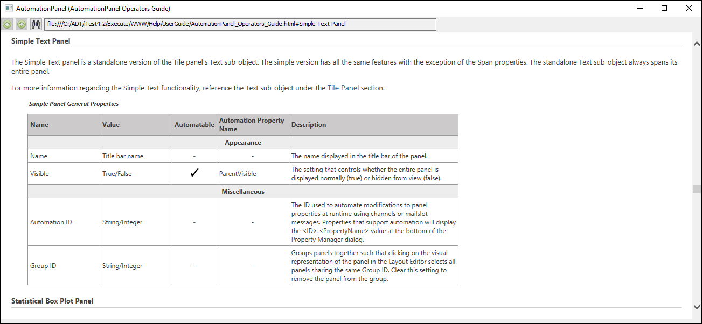
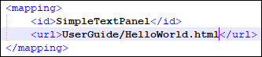
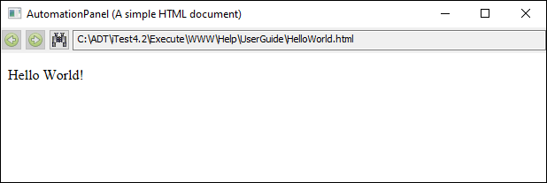

How to Display Custom Help Documents¶
Overview¶
iTest includes the ability to view panel help documents from the Property Manager via the Help… right-click option. By default, these documents are found in the iTest User’s Guide. However, you can change the displayed document by editing the helpid.xml file. This will also allow you to add documentation for custom panels.
Linking to Custom Documents¶
To link the help available from the Property Manager to custom HTML help documents, do the following:
|
 |
NOTE: |
The HTML help document must be found at $SYSTEMDIR\Execute\WWW\Help\UserGuide. If the HTML help document is not in this location, then an error message will display. For a native Japanese O/S, use the WWW_ja folder instead of the WWW folder. |
- In order to identify the node in the helpid.xml file to add/update, set the
HelpDebug= powertek.ini setting to TRUE.
HelpDebug Setting

- Open the Property Manager in AutomationPanel or SolutionBuilder. Right-click on a panel and select the Help... right-click option.
Help... Right-Click Option

- The help ID will display. This indicates the note you must add/update in the helpid.xml file.
Help ID

- Click OK. The URL specified in the helpid.xml file will open if the node exists. In the image below, the URL is set to
UserGuide\AutomationPanel_Operators_Guide.html#Simple-Text-Panel.
Simple Text Panel Document

- Close AutomationPanel or SolutionBuilder then open the helpid.xml file. This file is located under $SYSTEMDIR\Execute\WWW\Help.
- Locate the node as specified by the help ID. Edit the URL between the <url> tags. The URL must start with
UserGuide.
Edit URL

- Save changes then reopen AutomationPanel or SolutionBuilder.
- Open the Property Manager then right-click on the panel and select the Help... right-click option. The custom HTML help document now displays.
Custom Help Document
